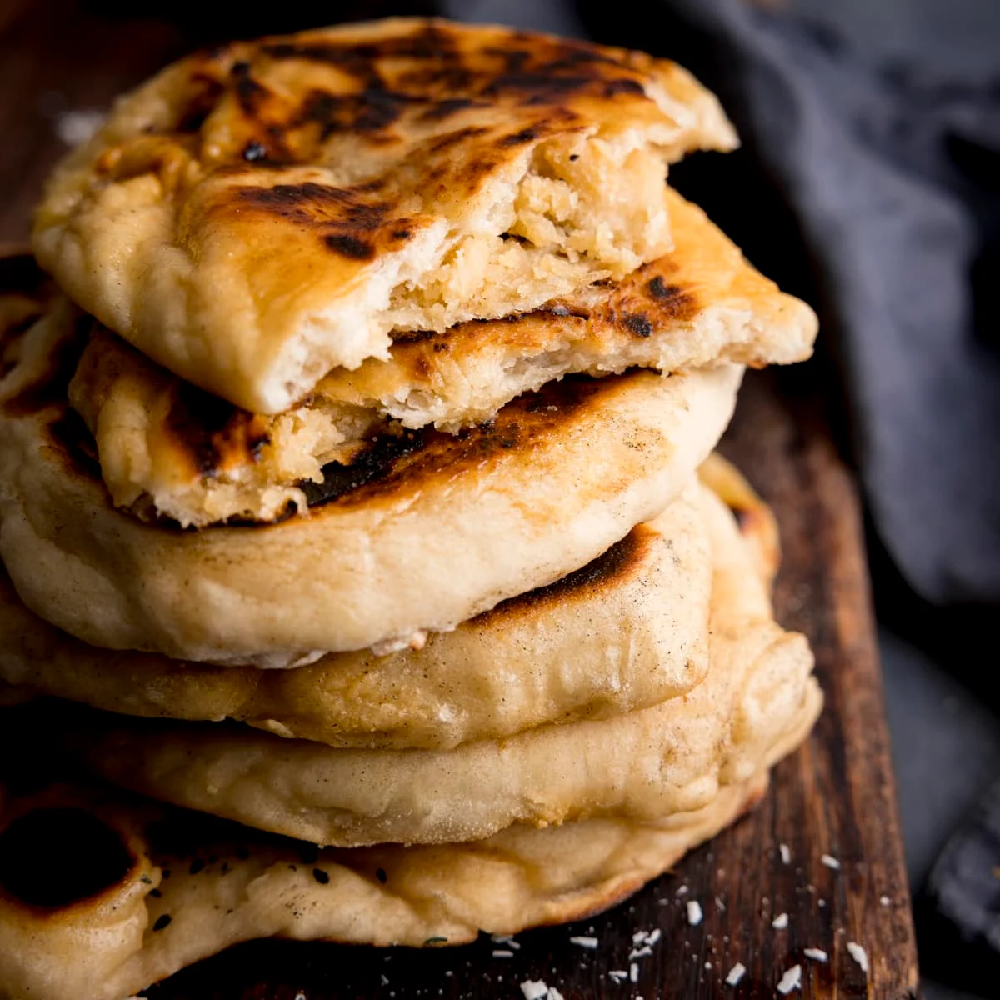

Peshwari Naan (or Peshawari naan) is a leavened bread, filled with desiccated coconut, sultanas (or raisins), and almonds. It originates from the city of Peshawar in Pakistan. This sweet naan bread is usually smeared with melted butter or ghee after cooking. Some Indian restaurants also add almond flakes and sultanas to the naan and drizzle it with honey or syrup.
Meal prep time : 45 minutes
Servings : 8